Implements and simulates Sun nadir pointing control.
The control system is a three axis PID controller for the spacecraft attitude driving a four reaction wheel tach loop system. The solar arrays use stepping motors and are controlled by a separate controller.
Saves an STK attitude file. ------------------------------------------------------------------------- See also CDist, I2B, ICSN, SSAD, RHSSNP, SSOutput, CToD, PIDMIMO, PIDesign, NPlot, Plot2D, TimeGUI, STKAtt, RK4, JD2Date, SunNadir, CW2Roll, ESACS -------------------------------------------------------------------------
Contents
- Global for the TimeGUI
- STK Information
- Constants
- The control sampling period and the simulation integration time step
- Number of sim steps
- Plot every nPMax steps
- Print the time to go message every nTTGo steps
- The disturbance model
- Spacecraft Inertias
- Wheel spin axis unit vectors
- Design the control loops
- Sensor hardware parameters
- Initialize the control system
- Plotting arrays
- Initial conditions
- Initialize the time display
- Run the simulation
- Plotting
%------------------------------------------------------------------------------- % Copyright (c) 1995-2001, 2015, 2016 Princeton Satellite Systems, Inc. % All rights reserved. %------------------------------------------------------------------------------- % Since version 1. Formerly TSNPSim. % 2016.1 - Update RHS to be a function handle. Save STK attitude file in the % same directory as this file. %-------------------------------------------------------------------------------
Global for the TimeGUI
%------------------------ global simulationAction simulationAction = ' ';
STK Information
%---------------- sTKVersion = '3.0';
Constants
---------
degToRad = pi/180; radToDeg = 180/pi; c45 = cos(45*degToRad);
The control sampling period and the simulation integration time step
--------------------------------------------------------------------
tSamp = 1;
Number of sim steps
-------------------
nSim = 10000; tEnd = nSim*tSamp;
Plot every nPMax steps
----------------------
nPMax = 10; nPlot = nSim/nPMax;
Print the time to go message every nTTGo steps
-----------------------------------------------
nTTGo = 100; % Sun angle with respect to the orbit plane and location of the % spacecraft with respect to the sun projection in the orbit plane % ---------------------------------------------------------------- beta = 40*degToRad; alpha = 90*degToRad; rOrbit = 26560; rCO2Earth = 6418; xNoSun = -1; % No sun on the -x face cBeta = cos(beta); sBeta = sin(beta); angEarth = asin(rCO2Earth/rOrbit); wo = sqrt(3.986012e5/rOrbit)/rOrbit;
The disturbance model
---------------------
tDist = [0.0;0.0;0.0];
Spacecraft Inertias
-------------------
inr = [2000,0,0;0,2000,0;0,0,2000]; inrRWA = 1; inrSA = 10; inrW = [inrSA,inrSA,inrRWA,inrRWA,inrRWA,inrRWA]; invInr = inv(inr);
Wheel spin axis unit vectors
----------------------------
uW = [ 0 0 c45 -c45 0 0;... 1 1 0 0 c45 -c45;... 0 0 c45 c45 c45 c45]; sAStepSize = 2*pi/18000; % 18000 solar array steps per revolution iRWA = 3:6; % ------------------------------------------------------------------------------
Design the control loops
------------------------------------------------------------------------------
% Momentum Management gain % ------------------------ kMM = 0.001; % RWA Tach loops % -------------- zeta = 0.7071; % Damping ratio wN = 0.2; % Closed loop undamped natural frequency [aTL,bTL,cTL,dTL] = PIDesign( zeta, wN, inrW(3), tSamp, 'Delta' ); % Attitude Loops % -------------- zeta = 0.7071; % Damping ratio wN = 0.02; % Closed loop undamped natural frequency wR = 1.0; % Rate filter break frequency tau = 200; % Integrator time constant [aRoll ,bRoll, cRoll, dRoll] = PIDMIMO( inr(1,1), zeta, wN, tau, wR, tSamp, 'Delta'); [aPitch,bPitch,cPitch,dPitch] = PIDMIMO( inr(2,2), zeta, wN, tau, wR, tSamp, 'Delta'); [aYaw, bYaw, cYaw, dYaw] = PIDMIMO( inr(3,3), zeta, wN, tau, wR, tSamp, 'Delta');
Sensor hardware parameters
--------------------------
cantESA = 36*degToRad; uESA = [0;cos(cantESA);sin(cantESA)]; cantESAScan = 45*degToRad; cS45 = cos(45*degToRad); uSSInSAF = [ 0, cS45, 0,-cS45;... cS45, 0,-cS45, 0;... cS45, cS45, cS45, cS45]; eyeSSCoeff = [1 0.01]'; maxSS = sum(eyeSSCoeff); nSA = [1 1 2 2]; quantSSA = 2^32-1; pitchAxis = 2; uPitch = [0;1;0];
Initialize the control system
-----------------------------
xTL = zeros(4,1); xRoll = [0;0]; xPitch = [0;0]; xYaw = [0;0]; tC = [0;0;0]; cToD = sum(eyeSSCoeff)/quantSSA; kSAPitch = 0.95; sAPitch = 0.0; filteredSAPitch = 0.0; [yawModel,sAAngleModel,yawRateModel] = SunNadir( xNoSun, wo, beta, alpha ); % The control distribution matrix converts % torque demand to angular acceleration demand % -------------------------------------------- aRWA = CDist( uW(:,3:6) )/inrW(3); wRWAC = [0;0;0;0];
Plotting arrays
---------------
cPlot = zeros( 3,nPlot); ePlot = zeros( 3,nPlot); fPlot = zeros( 2,nPlot); hPlot = zeros( 3,nPlot); mPlot = zeros( 4,nPlot); sPlot = zeros( 1,nPlot); tPlot = zeros( 1,nPlot); xPlot = zeros(15,nPlot); yPlot = zeros( 3,nPlot); zPlot = zeros( 3,nPlot);
Initial conditions
------------------
[q,angleSA,w] = ICSN( xNoSun, wo, beta, alpha );
angleSAC = [angleSA;angleSA];
% q eSA w wSA wRWA
x = [q;angleSAC;w;[0;0];[0;0;0;0]];
dTSim = tSamp;
t = 0;
nP = 0;
kP = 0;
tW = zeros(6,1);
roll = 0;
pitch = 0;
yaw = 0;
uSunI = [ cBeta; 0; sBeta ];
mSS = SSOutput( angleSAC, nSA, uSSInSAF, I2B(q,uSunI), eyeSSCoeff, quantSSA );
Initialize the time display
%---------------------------- [ ratioRealTime, tToGoMem ] = TimeGUI( nSim, 0, [], 0, dTSim, 'SunNadirPointingSim' );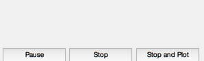
Run the simulation
------------------
for k = 1:nSim % Display the status message %--------------------------- [ ratioRealTime, tToGoMem ] = TimeGUI( nSim, k, tToGoMem, ratioRealTime, dTSim ); % Attitude quaternion % ------------------- qIToB = x(1:4); % Ephemeris % --------- rNadir = rOrbit*[-sin(alpha);0;cos(alpha)]; uSunB = I2B( qIToB, uSunI ); % ------------------------------------------------------------------------------ % Sensor Hardware % ------------------------------------------------------------------------------ % RWA Tachometer % -------------- wTach = x(12:15); % Solar array mounted sun sensors % ------------------------------- mSS = SSOutput( x(5:6), nSA, uSSInSAF, uSunB, eyeSSCoeff, quantSSA ); % Conical Scanning ESA % -------------------- [chordwidth, scanAngle] = ESACS( qIToB, rNadir, uESA, cantESAScan, pitchAxis ); % ------------------------------------------------------------------------------ % The Attitude Control System % ------------------------------------------------------------------------------ % Ephemeris Processing % -------------------- [yawModel,sAAngleModel,yawRateModel,saRateModel] = SunNadir( xNoSun, wo, beta, alpha ); % Sensor Processing % ----------------- % Conical Scanning ESA % -------------------- rollX = CW2Roll( scanAngle, cantESAScan, uESA, uPitch, angEarth, chordwidth ); [dontCare,j] = min(abs(rollX)); roll = rollX(j); pitch = scanAngle; % Solar array mounted sun sensors % ------------------------------- uSunL = [ -sin(alpha)*cBeta;-sBeta;-cos(alpha)*cBeta ]; [yaw,sAPitch] = SSAD( cToD*mSS, eyeSSCoeff, uSunL, roll ); % Momentum Management % ------------------- % Neglect the rate errors in the body component-assume exact tracking % ------------------------------------------------------------------- hTotal = inr*[0;wo;yawRateModel] + inrRWA*uW(:,iRWA)*wTach; % Proportional controller for momentum % We could feedforward this to the controller % ------------------------------------------- tMM = -kMM*hTotal; % The attitude control loops % -------------------------- tC(1) = -cRoll*xRoll - dRoll*roll; xRoll = xRoll + aRoll*xRoll + bRoll*roll; tC(2) = -cPitch*xPitch - dPitch*pitch; xPitch = xPitch + aPitch*xPitch + bPitch*pitch; tC(3) = -cYaw*xYaw - dYaw*yaw; xYaw = xYaw + aYaw*xYaw + bYaw*yaw; % Solar Array Control % ------------------- filteredSAPitch = kSAPitch*filteredSAPitch + (1-kSAPitch)*sAPitch; deltaAngle = sAStepSize*fix(filteredSAPitch/sAStepSize); angleSAC = angleSAC + [1;1]*deltaAngle; % Convert torque demand to RWA angular acceleration demand % -------------------------------------------------------- wDRWA = -aRWA*tC; % Integrate to get wheel speed demand % ----------------------------------- wRWAC = wRWAC + tSamp*wDRWA; % The RWA Tach Loops % ------------------ wError = wTach - wRWAC; tRWA = -dTL*wError - cTL*xTL; xTL = xTL + aTL*xTL + bTL*wError; % ------------------------------------------------------------------------------- % Update the equations of motion % ------------------------------------------------------------------------------- tW(iRWA) = tRWA; x = RK4(@RHSSNP,x,dTSim,t,inr,invInr,tDist+tMM,inrW,uW,tW,angleSAC); t = t + dTSim; % Update the orbit % ---------------- alpha = alpha + wo*dTSim; % Plotting % -------- if( nP == 0 ) kP = kP + 1; xPlot(:,kP) = x; tPlot(1,kP) = alpha*radToDeg; cPlot(:,kP) = tC; ePlot(:,kP) = [roll;pitch;yaw]*radToDeg; fPlot(:,kP) = [sAPitch;yaw]*radToDeg; mPlot(:,kP) = mSS'; yPlot(:,kP) = [yawModel;sAAngleModel;yawRateModel]*radToDeg; sPlot(1,kP) = angleSAC(1); hPlot(:,kP) = hTotal; zPlot(:,kP) = tMM; nP = nPMax - 1; else nP = nP - 1; end % Time control %------------- switch simulationAction case 'pause' pause simulationAction = ' '; case 'stop' return; case 'plot' break; end end % ------------------------------------------------------------------------------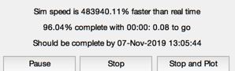
Plotting
------------------------------------------------------------------------------
j = 1:kP; tPlot = tPlot(j); epoch = JD2Date; filePath = fileparts(mfilename('fullpath')); [err, message] = STKAtt( fullfile(filePath,'STKAttitudeFile.txt'),sTKVersion,epoch,kP,tPlot,xPlot( 1: 4,j),'quaternion'); tL = '\alpha (deg)'; Plot2D(tPlot,xPlot( 1: 4,j),tL,{'Q_s';'Q_x';'Q_y';'Q_z'},'Quaternion') Plot2D(tPlot,xPlot( 7: 9,j),tL,{'\omega_x';'\omega_y';'\omega_z'},'Body Rates') Plot2D(tPlot,xPlot(12:15,j),tL,{'\omega_1';'\omega_2';'\omega_3';'\omega_4'},'Reaction Wheels') Plot2D(tPlot,[xPlot([5 6 10 11],j);sPlot(j)]*radToDeg, tL,... {'Angle (deg)','Rate (deg/sec)' 'Commanded Angle (deg)'}, 'Solar Array','lin', {'1:2','3:4','5'} ) Plot2D(tPlot,cPlot(:,j),tL,{'T_x';'T_y';'T_z'},'Control Torque Demand') Plot2D(tPlot,ePlot(:,j),tL,{'Roll (deg)';'Pitch (deg)';'Yaw (deg)'},'Measured Attitude Errors') Plot2D(tPlot,fPlot(:,j),tL,{'SA Pitch Error (deg)';'Yaw Error (deg)'},'Sun Sensor Measured Attitude') Plot2D(tPlot,mPlot(:,j),tL,{ '[+y +z] (Counts)';... '[+x +z] (Counts)';... '[-y +z] (Counts)';... '[-x +z] (Counts)'},'Sun Sensor Eyes') Plot2D(tPlot,yPlot(:,j),tL,... {'Yaw (deg)' 'Solar Array Angle (deg)' 'Yaw Rate (deg/sec)'}, 'Model Sun Nadir Trajectory') Plot2D(tPlot,hPlot(:,j),tL,{'h_x';'h_y';'h_z'},'Body Momentum') Plot2D(tPlot,zPlot(:,j),tL,{'T_x';'T_y';'T_z'},'Momentum Management torque') TimeGUI('close'); Figui; %-------------------------------------- % PSS internal file version information %--------------------------------------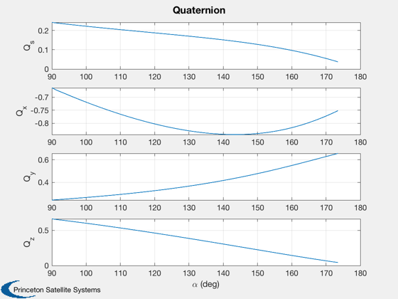 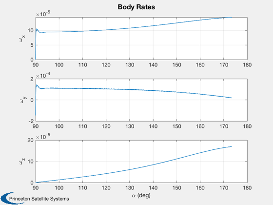 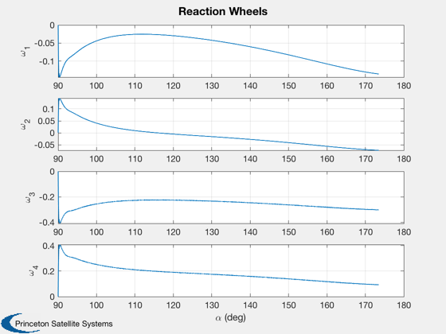 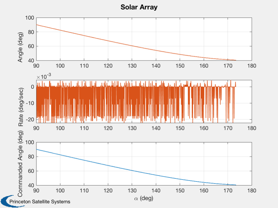 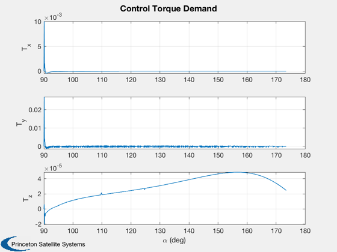 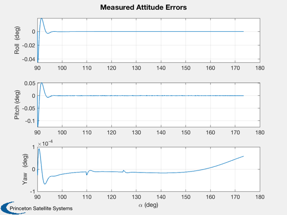 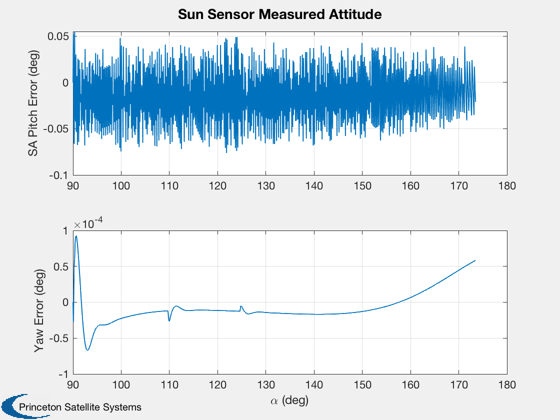 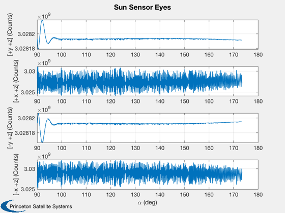 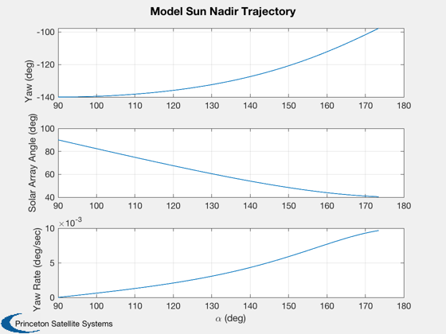 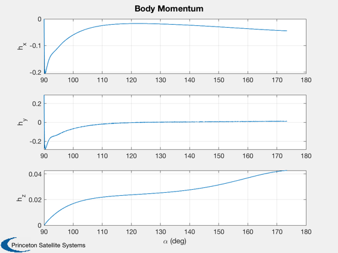 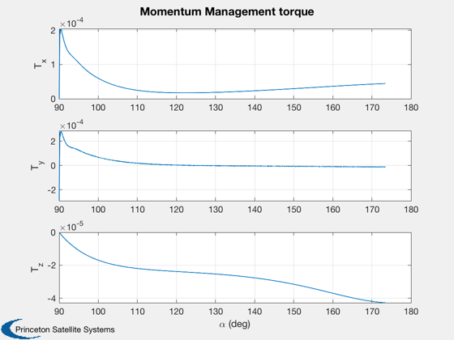 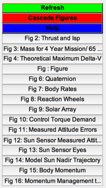